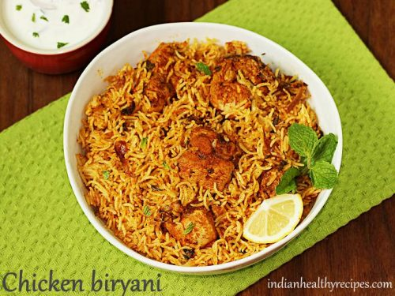

Biriyani

Who doesn't love biryani.Biryani is a celebration of all that is great about Indian food the heady aromas, the vibrant colors, the fluffy rice and those addictive curry flavours. Make this Chicken Biryani with your protein of choice or try a vegetable biryani!
Ingredients
- 300g basmati rice
- 25g butter
- 1 large onion, finely sliced
- 1 bay leaf
- 3 cardamom pods
- small cinnamon stick
- 1 tsp turmeric
- 4 skinless chicken breasts, cut into large chunks
- 4 tbsp balti curry paste
- 85g raisins
- 850ml chicken stock
- 30g coriander, ½ chopped, ½ leaves picked and 2 tbsp toasted flaked almonds, to serve
Steps
- Soak 300g basmati rice in warm water, then wash in cold until the water runs clear.
- Heat 25g butter in a saucepan and cook 1 finely sliced large onion with 1 bay leaf, 3 cardamom pods and 1 small cinnamon stick for 10 mins.
- Sprinkle in 1 tsp turmeric, then add 4 chicken breasts, cut into large chunks, and 4 tbsp curry paste. Cook until aromatic.
- Stir the rice into the pan with 85g raisins, then pour over 850ml chicken stock.
- Place a tight-fitting lid on the pan and bring to a hard boil, then lower the heat to a minimum and cook the rice for another 5 mins.
- Turn off the heat and leave for 10 mins. Stir well, mixing through 15g chopped coriander. To serve, scatter over the leaves of the remaining 15g coriander and 2 tbsp toasted almonds.